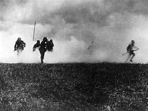
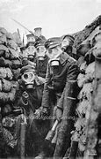

<!DOCTYPE html>
<html lang="en"></html>
<head>
<meta charset="UTF-8" />
    <meta http-equiv="X-UA-Compatible" content="IE=edge" />
    <meta name="viewport" content="width=device-width, initial-scale=1.0" />
    <link rel="stylesheet" href="stylesheet/styles.css" />
    <title> World War 1 Timeline</title>
</head>
    <h1>1915</h1>

    <p>In April 22 of 1915, the Germans began their first ever gas attack which was deadly to all.</p>






<p>Germany made mustard gas and used it as their own powerful weapon in the war</p>
<p>Mustard gas's side effects were nausea and vomiting and anemia being devoloped several days after exposure and could even kill someone.</p>


<a href="../pages/page3.html">Continue here.</a>